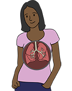

Module: In-depth information on muscle and lung disease with a focus on African Americans
Virginia Steen, MD
Lung Disease
One of the main reasons why African Americans have more severe disease is because they more frequently have severe lung involvement. This is partly because the antibodies Scl 70 and Nucleolar pattern ANA, which are associated with severe lung disease, are seen more frequently in African Americans. However, even when patients have the same autoantibody, African Americans have more severe disease than Caucasians. Dr. Richard Silver has shown that even healthy African Americans have an abnormality in the lung that may increase development of scar tissue. Thus, it is absolutely critical that all African American scleroderma patients are carefully monitored for lung involvement.
Symptoms of lung disease are often hard to recognize and can be non-specific:
- Shortness of breath with effort
- Fatigue
- Chest Pain
- Cough
- Fainting/near-fainting
- Edema
- Increased digital ulcers
Shortness of breath (SOB) in scleroderma patients
- Shortness of breath is more common with activity and rarely is present at rest.
- You tend to adapt to your breathing difficulties, so you may not be aware that you are short of breath.
- You may not recognize shortness of breath. It may just feel like you are tired or fatigued.
- Carefully think about your breathing. Can you climb stairs, carry bags, and do things as quickly or as easily as you did last year?
- Tell your doctor about any changes in breathing since your last appointment.
Shortness of Breath is a key symptom. It is difficult to assess in scleroderma, because it can be from many different things.
- Lung involvement.
- Arthritis causes pain and difficulty exercising.
- Physical deconditioning because you are less active than previously.
- Anemia (a low blood count) can be from many different causes.
- Heart involvement.
- High blood pressure/kidney involvement.
- Depression.
Lung Tests: There are several tests than can help decide if you have lung disease, what type of lung disease and if it needs to be treated.
- ALL patients should have pulmonary function tests (PFTs, breathing tests) performed as soon as they get a diagnosis of scleroderma.
- Forced vital capacity (FVC) measures how much air you can get in your lungs. If there is scar tissue or fibrosis from interstitial lung disease, FVC is decreased.
- Diffusing capacity for carbon monoxide (DLCO) measures whether oxygen diffuses from air cells to the blood stream. This can be decreased by fibrosis or thickened blood vessels.
- If PFTs are normal, the PFTs should be repeated every 6 to 12 months to make sure there are no changes that would identify new lung disease.
- A high resolution CT Scan (HRCT), a special chest x-ray, should be done in all patients if the PFTs are abnormal as soon as the diagnosis of scleroderma is made.
- A baseline echo-cardiogram (a sound wave test of the heart) should be done in ALL patients. If the DLCO is low then it should be done every year. It can identify heart disease and pulmonary arterial hypertension.
Types of Lung Disease
Interstitial lung disease or pulmonary fibrosis
There are two major types of lung disease that occur in scleroderma. They occur at different times in the illness. The first type is interstitial lung disease or pulmonary fibrosis. This is from scar tissue in the lung. It occurs early in the disease. It needs to be treated very aggressively, because the medications that we have can only keep the disease from getting worse. We don’t have medicine to reverse the fibrosis. So we have to find fibrosis and treat it early.
Treatment for interstitial lung disease
- A marked decrease in the diffusion capacity (DLCO). DLCO is part of the pulmonary function test and is an excellent marker that identifies patients at increased risk for PAH.
- Patients with a low DLCO should have a yearly screening with an echocardiogram even without symptoms for evidence of PAH.
- Patients should also have a 6 minute walking test to measure decreases in walking endurance. The presence of decreased oxygen saturation may help identify patients who are having lung problems.
- Right heart catheterization is the gold standard procedure to diagnose pulmonary arterial hypertension. This is an invasive test performed by specialists in cardiology wherein a slender tube is introduced into the circulation, advanced carefully to the right side of the heart and into the lungs. Careful measurements of blood flows and pressures define the diagnosis of pulmonary hypertension. More information about RHC is available at https://www.uofmhealth.org/conditions-treatments/pulmonary-hypertension-scleroderma”
Treatment of pulmonary arterial hypertension
- We are fortunate to have more than 10 medications that are approved for the treatment of pulmonary arterial hypertension (PAH). But it is important to diagnose and treat PAH early and aggressively.
General management of lung disease: Whatever kind of lung disease a scleroderma patient has, there are multiple things that are very important to do to improve overall function.
- Exercise
- If you have known pulmonary fibrosis or pulmonary hypertension, pulmonary rehab (as prescribed by your doctor) may be very helpful.
- It is very important to walk and exercise as much as possible to improve your endurance.
- Control reflux
- Reflux and micro aspiration may make any scleroderma lung disease worse. So you must take proton pump inhibitors at least once and maybe twice a day to prevent reflux.
- Prevent infection
- You should get a pneumonia shot and yearly flu shot.
- Avoid contact with friends or family with upper respiratory infections.
- Prevent low oxygen
- Use a forehead oxygen probe to check your oxygen saturation when walking. This is to make sure you don’t develop low oxygen saturation.
- If you have low oxygen you MUST use oxygen when you exercise so there is less stress on your heart.